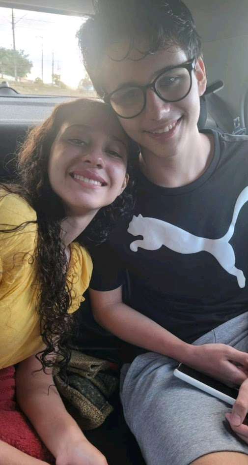
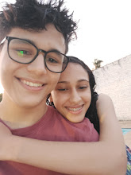
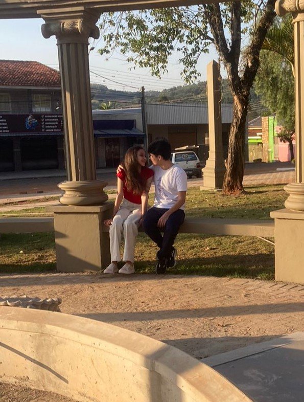
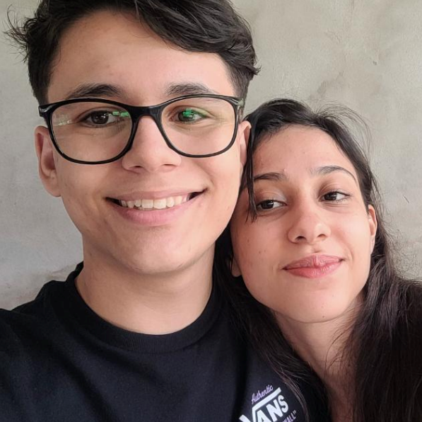

Um Resuminho dos Meus Pensamentos...
"Ao pensar em ti, uma série de sentimentos me domina, minha mente treme em pensar no nosso futuro e meu coração se aquece. Se pudesse resumir você em minha vida, seria um ótimo abraço quente, aquecendo como uma manta no dia mais frio, enquanto nosso futuro é uma fogueira incerta com uma chama forte onde a única certeza é de que o fogo não vai se apagar ou se abalar mesmo com todo o vento que a vida jogará em nós..."

A gente se viu! Nunca vou esquecer o olhar da minha neném com aquele vestido amarelo, me olhando enquanto sorria e chorava de longe, aquele dia eu estava super travado, mas vou te contar algo, quando fui embora eu chorei muito enquanto um pensamento não saia da minha cabeça: "É ela!", segurar sua mão naquele dia foi mais que suficiente para querer casar com você.

Depois de 2 anos e algumas confusões, conseguimos nos encontrar novamente e foi um dia incrível! Estávamos mais próximos, passamos o dia todo juntos e tivemos nosso primeiro beijo (Que boquinha boa em bb).

Textinho para agradecer o dia que me fez uma festinha surpresa (A imagem não é a do dia, pois alguém não me mandou as fotos até hoje), nesse dia fiquei realmente muito feliz... Obrigado amorzinho! De verdade sabe, foi a coisa mais legal que fizeram pra mim, você é uma namorada incrível, muito incrível! Você é realmente uma fofa. Resumo do dia, minha querida namorada chega do nada, com uma festa de aniversário completamente inesperada, o bolo e as esfirras estavam maravilhosos, mas o melhor presente foi com certeza você lá comigo, te amo!

Uma semana juntos! Espera... Duas? Não! Três semanas juntos! Vamos ver, sobre esses dias, eu diria que foi maravilhoso e eu amei muito estar contigo, desde esses dias estou com tanta saudade, muita mesmo sabe. A rotina ao seu lado é incrível, meus dias são leves, poder te ver é incrível, te beijar todos os dias, olhar nos seus olhos e estar ali ao seu lado é ótimo, simplesmente incrível. Agora quero muito me casar, muito mesmo, vamos?